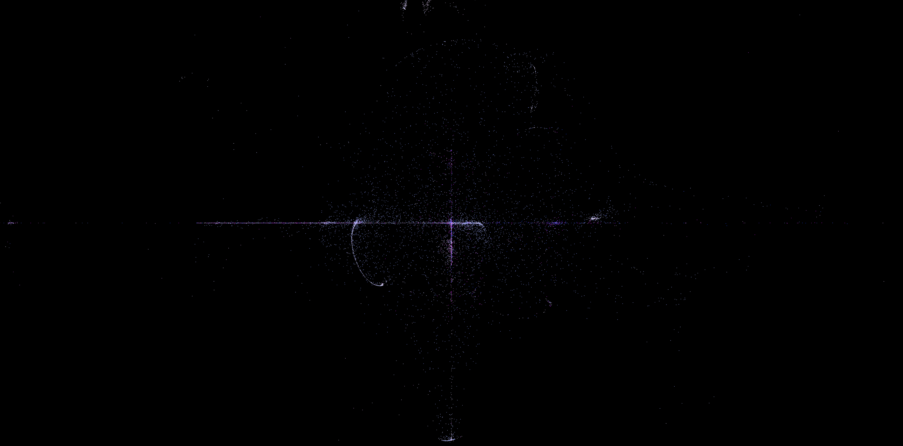
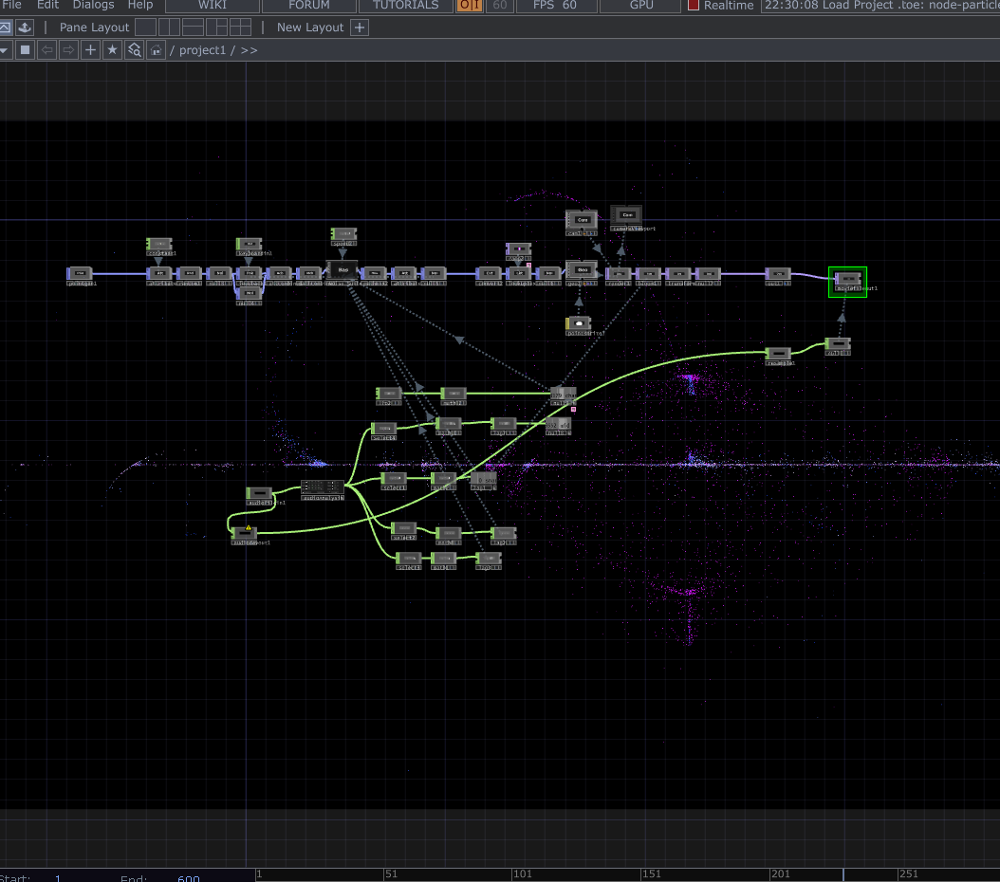

TouchDesigner · Audio-reactive
This project is an audio-reactive visual environment built in TouchDesigner that transforms ambient synth pads and subtle rhythmic pulses into evolving fields of light and motion. Designed as a meditative visual journey, the work invites viewers to slow down and get lost inside shifting particle systems that bloom, drift, and reorganize in response to sound. The piece can function as a concise one-minute loop or expand into a longer durational performance, depending on technical constraints such as file size and playback limitations. What is presented here is a sample entry point into a larger, immersive system capable of unfolding over time.
full-screen + audio

TouchDesigner